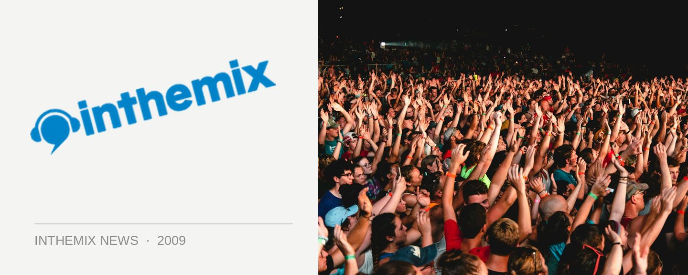

Big changes afoot for Home Nightclub's Friday nights
Home Nightclub’s Friday nights have been a dependable fixture on Sydney’s clubbing landscape for nearly a decade now, but in early September we’ll see the formula shaken up with Sublime shifted upstairs to a renovated top-floor terrace, and new night Oh My! taking over the main room for an electro-focused night that will feature France’s Kavinsky guest starring at the launch.
Sublime can boast the title of the world’s longest-running club night, having recently celebrated its 13th birthday, and on Friday September 4th it’ll be undergoing a transformation, taking over the terrace level which Home Nightclub says will be refashioned in time for the launch to become a brand new “indoor/outdoor rooftop club”.
New night Oh My! will then be taking over the main arena, mezzanine lounge and icon room, with a music policy that’s termed as “nu-rave”, with the side rooms playing disco and dubstep. Frequent Ed Banger collaborator Kavinsky will be jetting in directly from Paris for his only Australian appearance at the launch, and the promoters say it’s merely a sign of things to come.
“For the past 4 months we’ve been trawling the globe building alliances, shaking hands and partying with leaders in this field and we’re about to launch into Australia with an all mighty bang.”
Meanwhile, this Friday night will be one of your last chances to see Sublime in its current format when the final Sony inthemix50 party takes over the club, with veteran residents Pee Wee Ferris and Archie on the decks. RSVP now for free entry all night.
Oh My! launches at Home Nightclub on Friday September 4th with Kavinsky as a special guest. Stay tuned to ITM for more info on Home’s Friday night transformation.